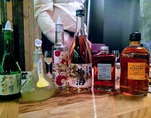

Производство сакэ – длительный процесс. На приготовление рисового солода, дрожжевой закваски и брожение основного затора уходят дни и недели. В целом же изготовление всего объема сакэ определенной марки занимает уже целые месяцы. А, как вы знаете, во всех этих процессах участвуют микроорганизмы – плесневые и дрожжевые грибки. Их жизнедеятельность зависит от множества факторов, изменяющихся во времени, в том числе и от собственного настроения: они то впадают в мерехлюндию от плохой погоды, то начинают работать с удвоенной энергией. В общем, все, как у людей. Вот и выходит, что затер раз сырье – получил сакэ. Начал затирать второй раз и стараешься сделать все, как в первый, но глядишь – окружающая температура скакнула, или культурные дрожжи что-то не поделили с дикими, или посторонние бактерии перестарались, а там и сакэдел на чем-то «споткнулся». Тут еще это самое настроение микроорганизмов, которое меняется, как у красной девицы, а подстроиться под него никаких нервов не хватит. Поэтому, как ни бейся, молодое сакэ, заливаемое в резервуары для выдержки, будет неоднородным в той или иной степени. Во время выдержки эта неоднородность может исчезнуть, что очень маловероятно, или, наоборот, увеличиться, что очень даже вероятно. А потребитель, если уж облюбовал конкретную марку сакэ с теми или иными только ему известными особенностями, то будь любезен и сегодня, и завтра, и через 10 лет обеспечить его именно таким сакэ. В противном случае он помыкается, помыкается да и увлечется маркой сакэ вашего конкурента. Чтобы этого не произошло, сакэделы вынуждены смешивать (или, по-научному, купажировать) сакэ одной марки, но выдержанное в разных резервуарах. Купажирование сглаживает указанные неоднородности, стабилизируя вкусовые и ароматические особенности сакэ конкретной марки, к которым привык привередливый потребитель за долгие годы «вкушения» именно этой, а не другой марки сакэ.
Теперь, казалось бы, можно купажированное сакэ разлить по бутылкам и – скорее его к потребителю. Но нет, его еще, оказывается, надо разбавить водой. Как известно, чем больше спирта, тем меньше как бактерий, так и проблем, которые они вызывают, поэтому на выдержку молодое сакэ «закладывают» в натуральном виде – с содержанием спирта 20%. А японцы, а это тоже историческая реальность, на генетическом уровне привыкли к сакэ крепостью порядка 15° и ни градусом больше.
Разбавленное водой до приемлемого японским организмом уровня сакэ наконец-то можно разливать до бутылкам. И здесь сакэделы опять проявляют неустанную заботу о сохранности своего детища на благо всей Японии, проще говоря, подвергают сакэ повторной пастеризации, чтобы оно, не дай бог, не «заболело» по дороге к потребителю (ведь не исключено, что во время купажирования или разбавления какая-нибудь вредина-бактерия может взять и напакостить) и могло долго храниться у него, и не только в холодильнике, но и где-нибудь в загашнике. Все мы люди. Сакэ может пастеризоваться перед заливкой в бутылки (прямо заливаться горячим) или после оного. Кстати, коэффициент утилизации (повторного использования) классических бутылок из-под сакэ емкостью 1,8 л в 1992 г. достиг 85%, а сейчас, зная о неустанной заботе японцев не только о сохранности сакэ, но и окружающей среды их обитания, смело можно утверждать, что этот коэффициент стал еще больше.